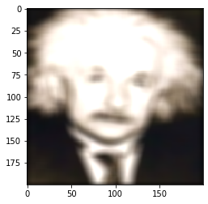
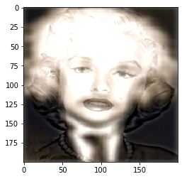

Hybrid image of Lionel Messi and a lion.
To get the hybrid image, I added the high pass of one image to the low pass of the other. Multiplying both by some ratio based on Trial and error.
The low pass is calculated by convolving the image using the Gaussian Blur Kernel. While the high pass is the differnece between the original image and the low pass.
Convolving images is done by mirroring the kernel up-down and left-right, and then calculating the cross correlation of the image passing the mirrored kernel.
Cross correaltion is calculated as follows:
def cross_correlation_2d(image, kernel):
x, y = kernel.shape
a, b = image.shape[0], image.shape[1]
out = np.zeros(image.shape)
flat_kernel = []
for row in kernel:
for i in row:
flat_kernel.append(i)
channels = image.shape[2] if image.ndim == 3 else 1
padding_size = (a+x-1,b+y-1,channels)
padding = np.zeros(padding_size, dtype=image.dtype)
coords = [[x//2,x//2+a],[y//2,y//2+b]]
padding[coords[0][0]:coords[0][1], coords[1][0]:coords[1][1]] =
image[:, :, np.newaxis] if channels == 1 else image
for i in range(a):
for j in range(b):
out[i, j] = flat_kernel @ padding[i:i+x, j:j+y].reshape((x*y, channels))
return out
|   |